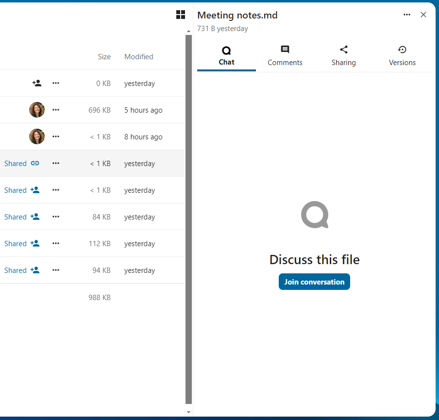
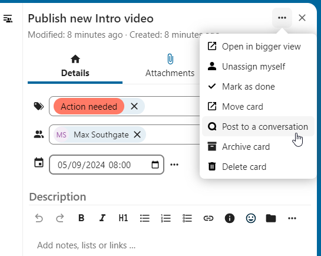
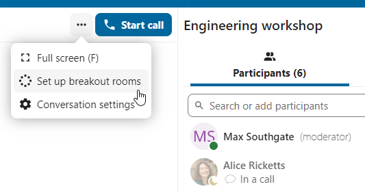
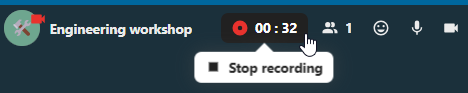
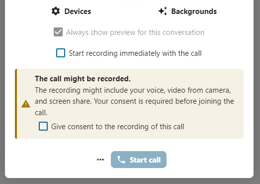
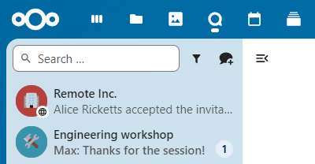

Gnéithe Casta Plé
Tá roinnt ardghnéithe ag Nextcloud Talk a d’fhéadfadh a bheith úsáideach d’úsáideoirí.
Matterbridge
Trí chomhtháthú Matterbridge in Nextcloud Talk is féidir ‘droichid’ a chruthú idir comhráite Talk agus comhráite ar sheirbhísí comhrá eile ar nós MS Teams, Discord, Matrix agus eile. Is féidir leat liosta de na prótacail tacaithe `a fháil ar an leathanach Matterbridge github. < https://github.com/42wim/matterbridge#features > `_
Is féidir le modhnóir nasc Matterbridge a chur leis sna socruithe comhrá comhrá.

Tá a riachtanas féin ag gach ceann de na droichid i dtéarmaí cumraíochta. Tá eolas don chuid is mó ar fáil ar vicí Matterbridge agus is féidir teacht air taobh thiar de roghchlár tuilleadh faisnéise sa roghchlár .... Is féidir leat freisin `rochtain a chur ar an vicí go díreach. < https://github.com/42wim/matterbridge/wiki > `_
Stocaireacht
Ceadaíonn an ghné stocaireachta duit scáileán feithimh a thaispeáint d'aíonna go dtí go dtosaíonn an glao. Tá sé seo oiriúnach le haghaidh webinars le rannpháirtithe seachtracha, mar shampla.

Is féidir leat an rogha a dhéanamh ligean do na rannpháirtithe páirt a ghlacadh sa ghlao ag am ar leith, nó nuair a dhéanann tú an stocaireacht a dhíbhe de láimh.
Orduithe
Ligeann Nextcloud d'úsáideoirí gníomhartha a fhorghníomhú ag baint úsáide as orduithe. De ghnáth is cosúil le hordú:
/eitleáin wiki
Is féidir le riarthóirí orduithe a chumrú, a chumasú agus a dhíchumasú. Is féidir le húsáideoirí an t-ordú help a úsáid chun a fháil amach cad iad na horduithe atá ar fáil.
/cabhrú

Faigh tuilleadh eolais sa cháipéisíocht riaracháin do Talk. < https://nextcloud-talk.readthedocs.io/en/stable/commands/ > `_
Caint ó Chomhaid
San aip Comhaid, is féidir leat comhrá a dhéanamh faoi chomhaid sa bharra taoibh, agus fiú glaoch a chur ort agus é á chur in eagar. Caithfidh tú páirt a ghlacadh sa chomhrá ar dtús.
{kind=link}

Is féidir leat comhrá a dhéanamh ansin nó glaoch a chur ar rannpháirtithe eile, fiú nuair a thosaíonn tú ag eagarthóireacht an chomhaid.

In Plé, cruthófar comhrá don chomhad. Is féidir leat comhrá a dhéanamh as sin, nó dul ar ais go dtí an comhad ag baint úsáide as an roghchlár ... sa bharr ar dheis.

Cruthaigh tascanna ó chomhrá nó roinn tascanna sa chomhrá
Má tá Deic suiteáilte, is féidir leat an roghchlár ... de theachtaireacht chomhrá a úsáid agus an teachtaireacht a thiontú ina thasc Deic.
{kind=link}

Ón taobh istigh de Deic, is féidir leat tascanna a roinnt i gcomhráite comhrá.
{kind=link}
{kind=link}
Seomraí ar leithligh
Ligeann seomraí ar leithligh duit glao Nextcloud Talk a roinnt ina ngrúpaí níos lú le haghaidh díospóireachtaí níos dírithe. Is féidir le modhnóir an ghlao seomraí iolracha ar leithligh a chruthú agus rannpháirtithe a shannadh do gach seomra.
Note
Níl seomraí ar leithligh ar fáil faoi láthair i gcomhráite ar féidir le haíonna páirt a ghlacadh iontu (comhráite poiblí).
Cumraigh seomraí ar leithligh
Chun seomraí ar leithligh a chruthú, ní mór duit a bheith i do mhodhnóir i gcomhrá grúpa. Cliceáil ar an roghchlár barra barr agus cliceáil ar "Socraigh seomraí ar leithligh".
{kind=link}
Osclófar dialóg inar féidir leat líon na seomraí is mian leat a chruthú agus modh sannacháin na rannpháirtithe a shonrú. Anseo gheobhaidh tú 3 rogha:
Rannpháirtithe a shannadh go huathoibríoch: Sannfaidh Caint rannpháirtithe go huathoibríoch chuig na seomraí.
Rannpháirtithe a shannadh de láimh: Rachaidh tú trí eagarthóir rannpháirtithe áit ar féidir leat rannpháirtithe a shannadh chuig seomraí.
** Lig do rannpháirtithe rogha a dhéanamh**: Beidh na rannpháirtithe in ann dul isteach i seomraí ar leithligh iad féin.

Bainistigh seomraí ar leithligh
Nuair a bheidh na seomraí ar leithligh cruthaithe, beidh tú in ann iad a fheiceáil sa bharra taoibh.

Ó cheanntásc an bharra taoibh
Tosaigh agus stop na seomraí ar leithligh: bogfaidh sé seo na húsáideoirí go léir sa chomhrá tuismitheora chuig a seomraí ar leithligh faoi seach.
Teachtaireacht a chraoladh chuig na seomraí go léir: seolfaidh sé seo teachtaireacht chuig na seomraí go léir ag an am céanna.
Déan athruithe ar na rannpháirtithe sannta: osclóidh sé seo eagarthóir na rannpháirtithe áit ar féidir leat a athrú cé na rannpháirtithe atá sannta don seomra ar leithligh. Ón dialóg seo is féidir na seomraí ar leithligh a scriosadh freisin.

Ó eilimint an tseomra ar leithligh sa bharra taoibh, is féidir leat páirt a ghlacadh i seomra ar leithligh ar leith nó teachtaireacht a sheoladh chuig seomra ar leith.

Taifeadadh glaonna
Tugann an ghné taifeadta deis d’úsáideoirí:
Tosaigh agus stop taifeadtaí le linn glao.
Taifead sruth físe agus fuaime an chainteora, chomh maith le sciar scáileáin.
Comhaid thaifeadta a rochtain, a roinnt agus a íoslódáil le haghaidh tagartha nó dáileadh amach anseo.
Chun an ghné seo a chumasú ní mór don riarachán córais an freastalaí taifeadta a shocrú.
Bainistigh taifeadadh
Is féidir le modhnóir an chomhrá taifeadadh a thosú mar aon le tús an ghlao nó am ar bith le linn glao:
Roimh an ghlao: cuir tic sa ticbhosca "Tosaigh ag taifeadadh láithreach leis an nglao" i "Socruithe Meáin", ansin cliceáil ar "Tosaigh glao".
**Le linn an ghlao **: cliceáil ar an roghchlár barra barr, ansin cliceáil "Tosaigh taifeadadh".
{kind=link}

Tosóidh an taifeadadh go luath, agus feicfidh tú táscaire dearg in aice leis an am glaonna. Is féidir leat an taifeadadh a stopadh ag am ar bith agus an glao fós ar siúl trí chliceáil ar an táscaire sin agus "Stop an taifeadadh" a roghnú, nó tríd an ngníomh céanna a úsáid sa roghchlár barra barr. Mura stopann tú an taifeadadh de láimh, críochnóidh sé go huathoibríoch nuair a chríochnaíonn an glao.
{kind=link}
Tar éis taifeadadh a stopadh, tógfaidh an freastalaí roinnt ama chun an comhad taifeadta a ullmhú agus a shábháil. Faigheann an modhnóir, a chuir tús leis an taifeadadh, fógra nuair a uaslódáiltear an comhad. Ó ann, is féidir é a roinnt sa chomhrá.


Toiliú taifeadta
Ar chúiseanna comhlíonta le cearta príobháideachais éagsúla, is féidir iarraidh ar rannpháirtithe toiliú a thaifeadadh sula nglacfaidh siad páirt sa ghlao. Tá an tsolúbthacht ag riarachán an chórais an ghné seo a úsáid ar go leor bealaí:
Díchumasaigh toiliú go hiomlán.
Cumasaigh toiliú éigeantach ar fud an chórais, a éilíonn toiliú le haghaidh gach comhrá.
Lig do mhodhnóirí an rogha seo a chumrú ar leibhéal an chomhrá. I gcásanna den sórt sin, is féidir le modhnóirí rochtain a fháil ar na socruithe comhrá chun an rogha seo a chumrú dá réir:

Má tá toiliú taifeadta cumasaithe, feicfidh gach rannpháirtí, lena n-áirítear modhnóirí, rannán aibhsithe sna "Socruithe Meáin" sula nglacfaidh sé páirt i nglao. Cuireann an chuid seo na rannpháirtithe ar an eolas go bhféadfaí an glao a thaifeadadh. Chun toiliú sainráite a thabhairt do thaifeadadh, ní mór do rannpháirtithe an bosca a sheiceáil. Mura dtugann siad toiliú, ní bheidh cead acu páirt a ghlacadh sa ghlao.
{kind=link}

Comhrá cónaidhme
Le gné na Cónaidhme, is féidir le húsáideoirí comhráite a chruthú ar fud cásanna cónasctha éagsúla Talk agus gnéithe Talk a úsáid amhail is dá mbeidís ar fhreastalaí céanna.
Tábhachtach Faoi fhorbairt reatha. Tá bunghnéithe comhrá ar fáil, tuilleadh le teacht amach anseo!
Tá gá le gné a bhunú ag riarachán an chórais.
Seol agus glac le cuirí
Is féidir le modhnóir an chomhrá cuireadh a sheoladh chuig rannpháirtí ar fhreastalaí eile:

Agus fógra á fháil aige, feicfidh an t-úsáideoir cuntar de chuirí ar feitheamh os cionn an liosta comhráite.

Nuair a chliceáiltear é, cuirfear tuilleadh eolais ar fáil faoin gcuireadh cuireadh, agus is féidir leis an úsáideoir glacadh leis an gcuireadh nó diúltú dó.

Má ghlactar leis an gcuireadh, feicfear comhrá ar an liosta mar aon cheann eile.
{kind=link}